IPHONE 上的 SSH 服务器运维
你的服务器，
不必等到
回到电脑前。
连接 SSH 主机，查看实时状态，进入终端，管理 Docker，执行脚本和处理远程文件——都在你的 iPhone 上。
SSHMONITORTERMINALDOCKER
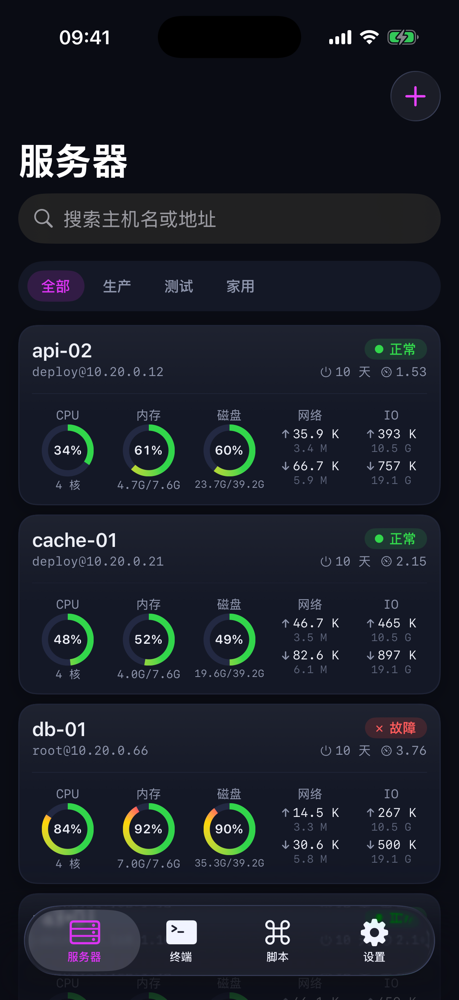
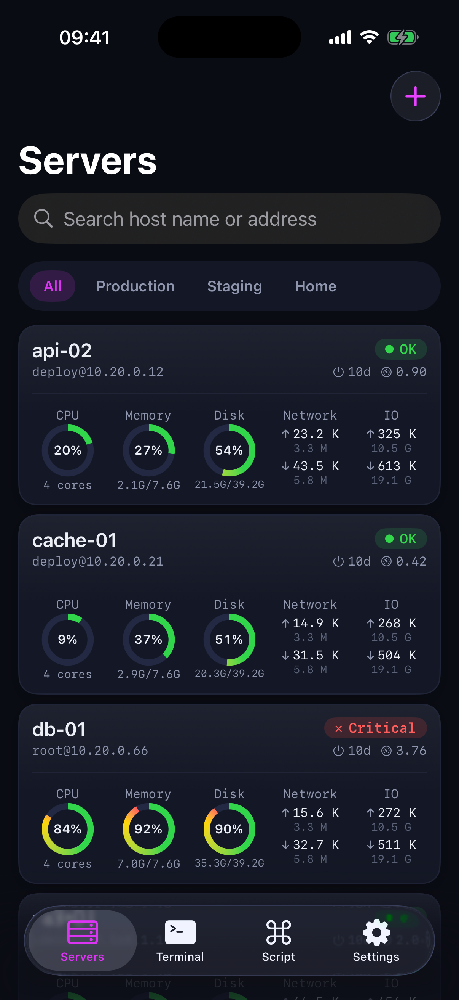
一套工作台，覆盖完整处置链路
SSHMONITORTERMINALDOCKERSCRIPTSFILES
01 / HOSTS
所有主机，
所有主机，
一屏掌握。
从服务器列表快速识别异常，再进入详情查看 CPU、内存、磁盘、网络、I/O、进程和日志。
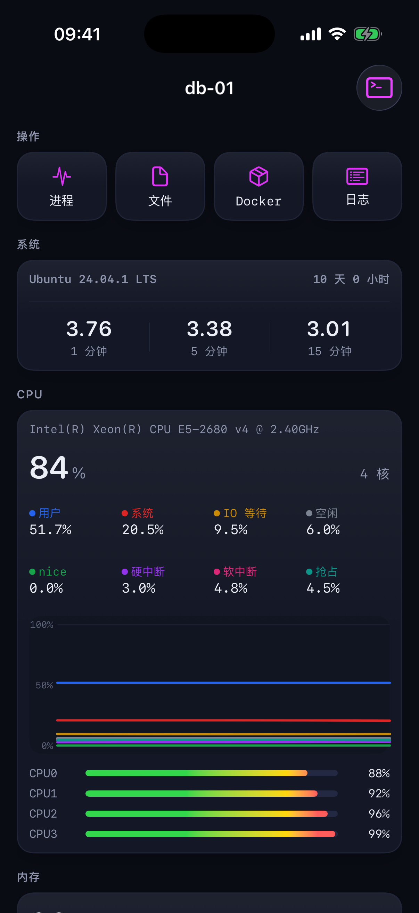
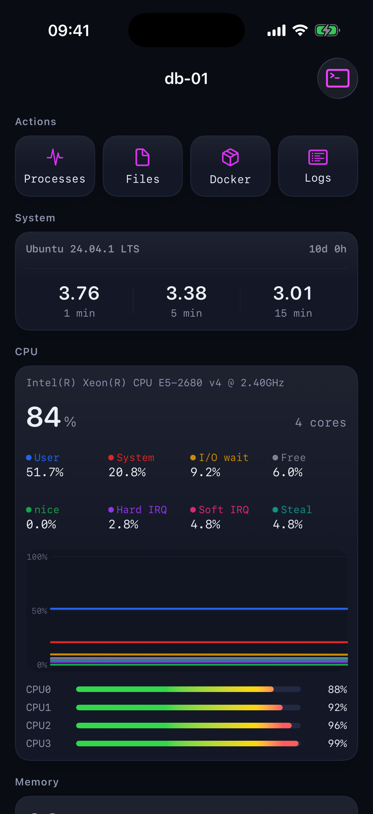
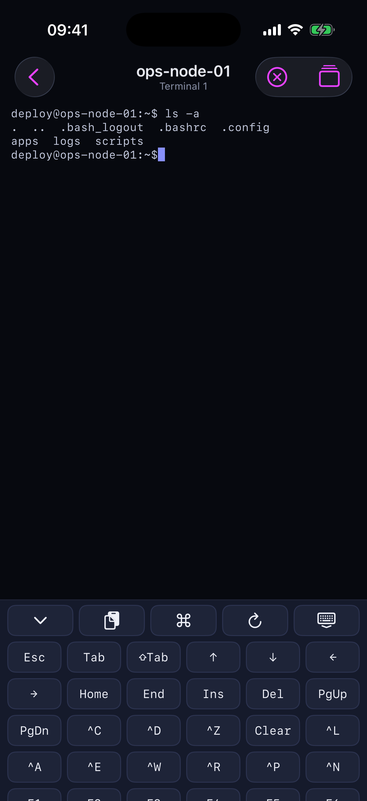
02 / TERMINAL
真正为触屏设计的，
真正为触屏设计的，
完整终端。
保持多个 SSH 会话，快速切换主机，用可展开快捷键处理方向键、Ctrl、Esc 和函数键。
03 / DOCKER
容器管理，
容器管理，
不必打开电脑。
查看容器资源、镜像、卷、网络和 Compose 项目，在统一界面完成常用操作和日志排查。
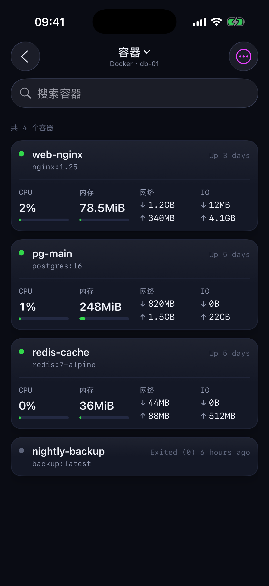
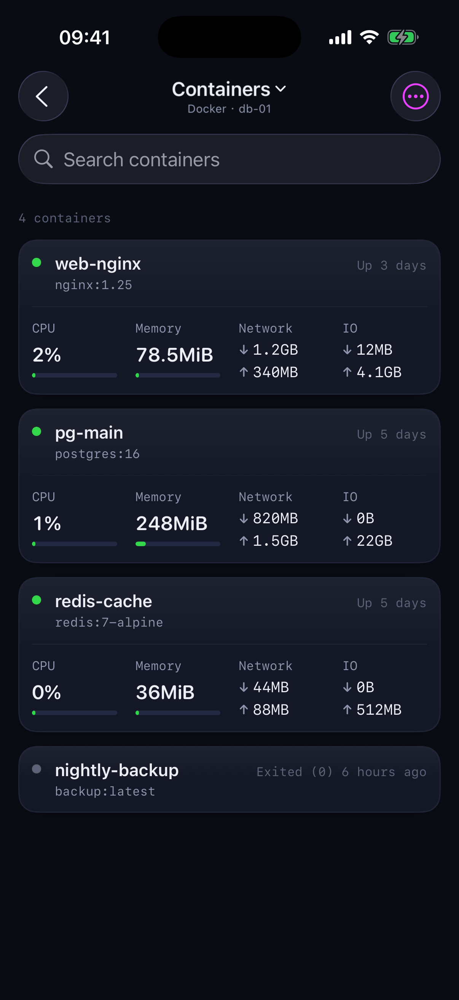
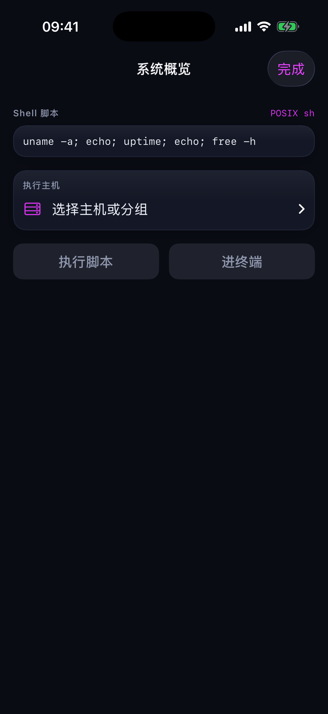
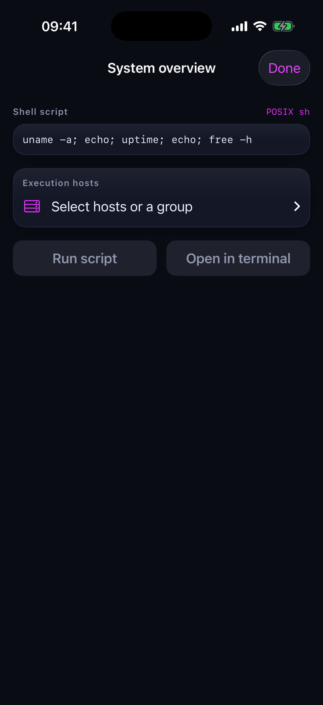
04 / SCRIPTS
一次脚本，
一次脚本，
多台主机。
保存常用 Shell 脚本，按主机或分组批量选择执行目标，并集中查看每台主机的执行结果。
05 / FILES
远程文件，
远程文件，
随时处理。
浏览、搜索、上传、下载和编辑远程文件，在需要时直接处理配置与日志。
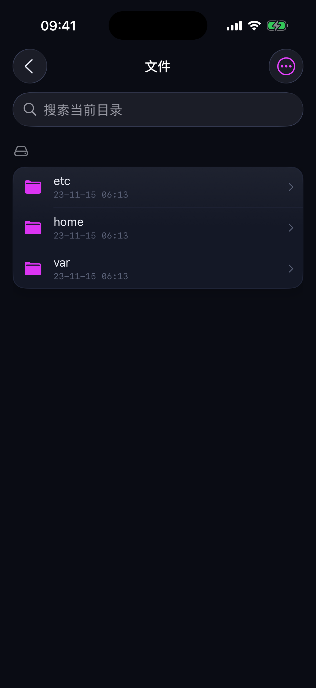
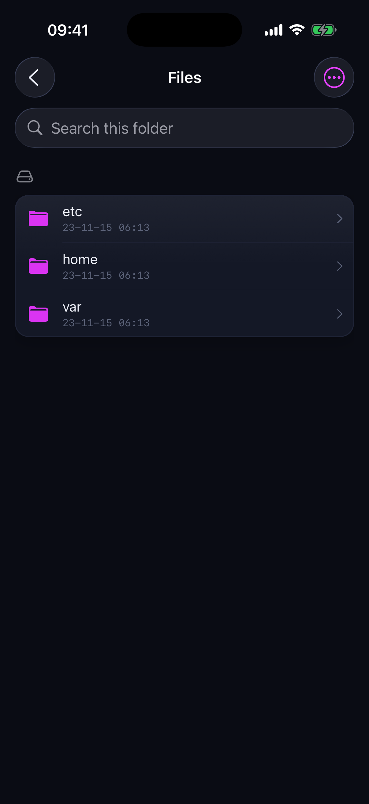